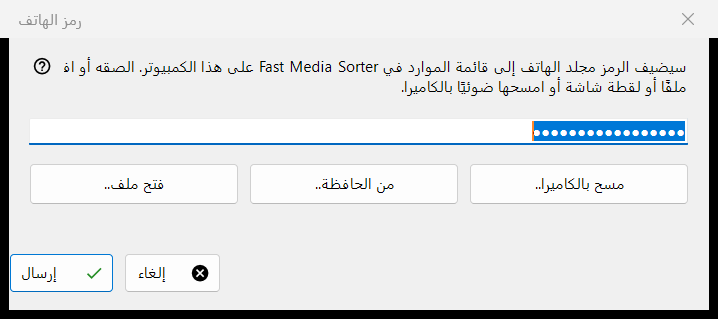
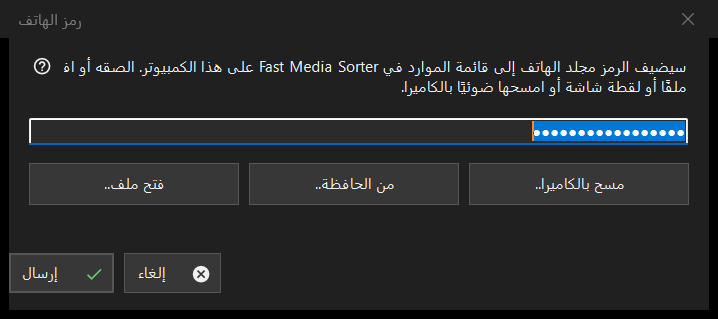

رمز الهاتف
الغرض من هذه النافذة
تستقبل رمز اتصال أنشأه تطبيق الهاتف وتسلّمه إلى Fast Media Sorter، الذي يضيف مجلد الهاتف إلى قائمة موارده على هذا الكمبيوتر. تُفتح من الزر رمز الهاتف.. في النافذة الرئيسية لـ Share Manager.


بهذا الترتيب
- أدخل الرمز في النافذة بإحدى أربع طرق: اكتبه أو الصقه في الحقل، أو اضغط الزر فتح ملف.. أو من الحافظة.. أو مسح بالكاميرا..
- اضغط إرسال.
- أكّد إضافة المجلد في نافذة Fast Media Sorter التي تظهر.
عناصر النافذة
رمز الاتصال
حقل من سطر واحد يعرض نقاطًا بدل الأحرف لأن الرمز سري؛ ولا يُكتب في أي سجل أبدًا. وإذا ضغطت إرسال والحقل فارغ طُلب منك كتابة الرمز أو لصقه أو فتح ملف أو لقطة شاشة.
الملف والحافظة والكاميرا
فتح ملف.. يقرأ ملفات .fmscfg و.json و.txt وصور QR (.png و.jpg و.jpeg و.bmp و.webp)؛ ويمكن أيضًا سحب الملف وإفلاته على النافذة. ومن الحافظة.. يقرأ الرمز من الحافظة. ومسح بالكاميرا.. يفتح نافذة الكاميرا، ويُعامَل النص الممسوح كأنه ملصوق.
إرسال
يُفحص الرمز ثم يُرسل إلى Fast Media Sorter العامل، الذي يظل مربع حوار الاستيراد الخاص به يطرح أسئلته المعتادة. عند النجاح تعرض الحالة: تم إرسال الرمز: أكد الإضافة في نافذة Fast Media Sorter. وتُغلق هذه النافذة. وإذا لم يُعثر على Fast Media Sorter أو كان إصدارًا أقدم أو لم يستجب، يوضع الرمز في الحافظة مع علامات الخصوصية، ويطلب سطر الحالة لصقه عبر استيراد من الحافظة في لوحة الموارد.
الرسائل في سطر الحالة
يُبلَّغ عن المستند الذي ليس رمز اتصال ولا ملف إعدادات موارد بأنه غير قابل للقراءة. ويطلب الملف الذي أنشأه إصدار أحدث تحديث Fast Media Sorter. وإذا كان برنامج آخر يحجز الحافظة تذكر الحالة ذلك.